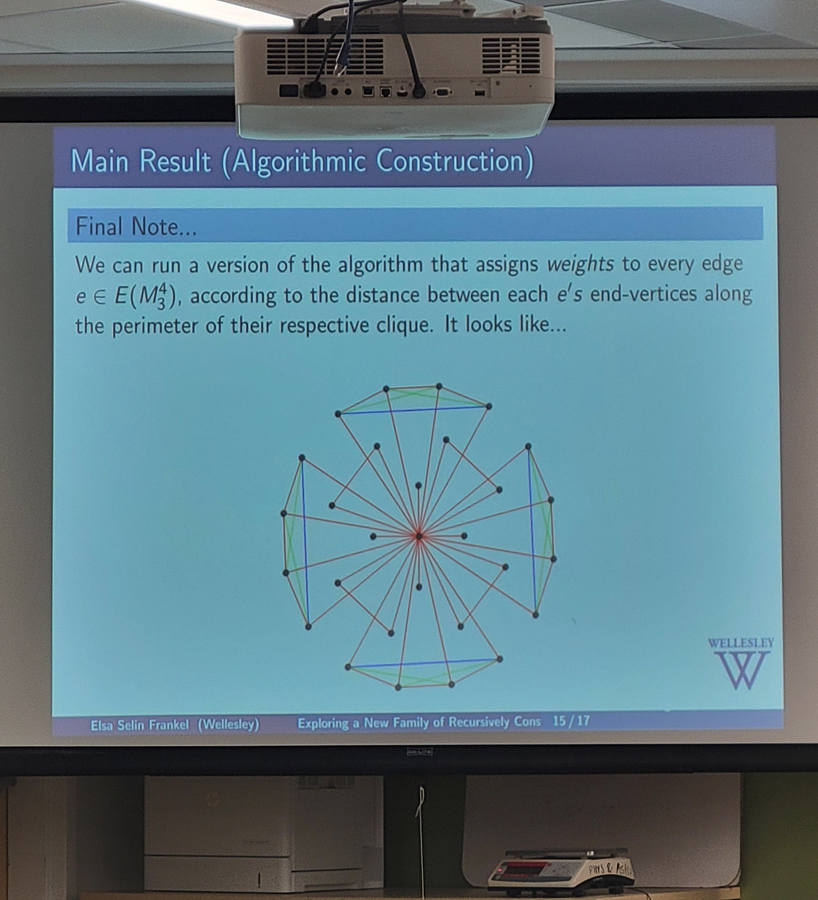

Talks/Conferences
I love attending and speaking at various mathematical events during the year.
Recently, I joined the organizing team for the OURFA2M2 conference.
Invited Talks:
"Lattices from a Curious Game on Partitions,"
Brandeis Combinatorics Seminar, Brandeis University, April 16th, 2026
"Lattices from a Curious Game on Partitions,"
UConn Cluster Algebras Reading Group, University of Connecticut,
March 24rd, 2026
Other Talks I've Given:
"Lattices from a Curious Game on Partitions,"
Wellesley Student Seminar, Wellesley College,
April 6th, 2026
"Lattices from a Curious Game on Partitions,"
SUMS 2026, Brown University, March 14th, 2026
"Exploring a New Family of Recursively Constricted Graphs,"
HRUMC 2025, Union College, April 5th, 2025
"Exploring a New Family of Recursively Constricted Graphs,"
Wellesley Math Student Seminars,
March 3rd, 2025
"On the Frobenius Norm of the Inverse of a Non-Negative Matrix,"
Tanner Conference 2024, October 29th, 2024
Attendance
Upcoming:
Past:
Connecticut Summer School in Number Theory
, University of Connecticut, June 1-7, 2026
Summer School in Total Positivity and Quantum Field Theory, Harvard University, June 2-4, 2025
From Cuts to Convexity & Beyond, Honoring Michel Goemans at 60
, MIT, June 11, 2025
AlCoVE: an Algebraic Combinatorics Virtual Expedition, Online, May 29-30, 2025
Women+ in Math and Statistics 2025, Harvard University, March 29, 2025
The Legacy of John Tate, and Beyond, Harvard University, March 21, 2025
OURFA2M2, Online, February 8-9 2025
WIMIN 2024, Smith College, September 21, 2024
FRG Workshop on Definability, Decidability and Computability, Harvard University, July 28 - August 2, 2024
Sixteenth Algorithmic Number Theory Symposium (ANTS XVI), MIT, July 15-19, 2024
The Mordell conjecture 100 years later, MIT, July 8-12, 2024
Women+ in Math and Statistics 2025, Harvard University, March 29, 2025
Statistical and Dynamical Combinatorics, A Mathematical Conference,
and celebration of Jim Propp's 2(4 choose 2)-th Birthday, MIT, June 26-29 2024
The Many Combinatorial Legacties of Richard P. Stanley,
Immense Birthday Glory of the Epic Catalonian Rascal, Harvard University, June 3-7, 2024
Contact:
Email 1: ef110@wellesley.edu
(general & professional)
Email 2: elsasfrankel@gmail.com
(social media & blog inquiries)

Credit: Professor Álvaro Lozano-Robledo (UConn)